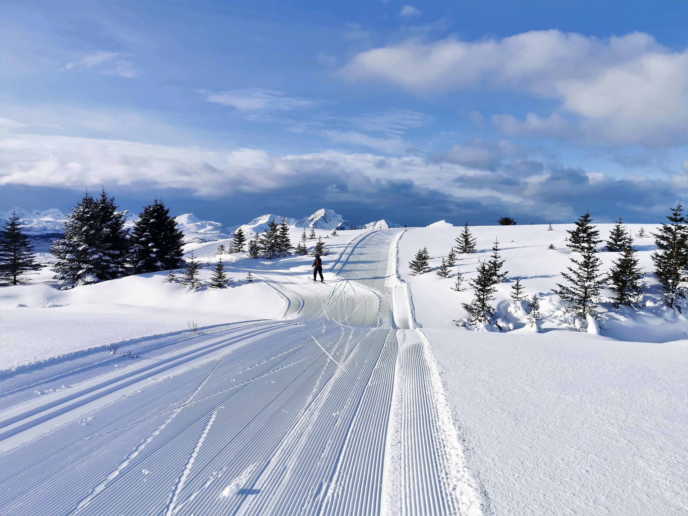

Idaho
Silver Mountain Resort - ski resort with indoor pool - 8:30am ~ 5pm - tickets: 65(weekdays), 75(holiday) Brundage Mountain Resort Idaho Ski Resort - It has trails, terrain parks & backcountry tours. - 9am ~ 4pm - tickets: 86(weekdays), 94(holiday) Pomerelle Mountain Resort - It has terrian parks - 9am ~ 4pm - tickets: 50(pre-purchase), 60(in person) Soldier Mountain - Thursday: 10am ~ 4pm, Fridya-Sunday: 9am ~ 4pm - tickets: starting at 24 Tamarack Resort - 9am ~ 4pm - tickets: 55(midweek), 75(weekend), 90(holiday) Pebble Creek Ski Area - 9am ~ 9:30pm - tickets: 62 Snowhaven Ski & Tubing Area - 10am ~ 4pm - tickets: 24 Magic Mountain Ski Resort - 9am ~ 4pm - tickets: 40 Cottonwood Butte Ski Area - 10am ~ 4pm - tickets: 20 Sun Valley - 9am ~ 4pm - tickets: 107~189 Kelly Canyon Resort - Tue/Wed/Th 12pm-8pm, Fri/Sat 9am-8pm, Sun 10am-4pm - tickets: 29~79 Little Ski Hill Bald Mountain Ski Area - 9:30am ~ 3:30pm - tickets: 25 Lookout Pass Ski & Recreation Area - 8:30am~4pm - tickets: 55(midweek), 66(weekend), 73(holiday) Schweitzer - 8am~7pm - tickets: 110 Bogus Basin Black Diamond Sports - 9am~10pm - tickets: 79 Rotarun Ski Area - 12pm~4pm - tickets: 15

Utah
Beaver Mtn - Slope is facing east and well maintained. Perfect for catching morning rays - 9am~4pm - tickets: 60 Cherry peak - The newest snow resort in Utah. - Monday - Thursday:5:00 PM - 9:00 PM, Friday - Saturday:9:00 AM - 9:00 PM, Sunday:9:00 AM - 4:00 PM - tickets: 48 Powder Mtn - One of the largest snow resort in North Americ. It has over 8000 acres area. - 9am~9pm - ticktes: 119 Nordic Valley - In the 2019/2022 seasons, they added 20 new ski runs. - Monday - Wednesday: 10:00 AM - 7:00 PM Thursday - Saturday: 10:00 AM - 8:00 PM Sunday: 10:00 AM - 4:00 PM - tickets: 19~69 Snowbasin - All season recreation resort- 9:00 AM - 4:00 PM - tickets: 135(weekdays), 175(weekend) Deer Valley - It is desinged to be different and unique. 9:00 AM - 4:00 PM - tickets: 229~269 Park City - the largest resort in the US with over 330 trail adn 43 lifts. - 9:00 AM - 4:00 PM - tickets: 250 Woodward - Indoor and outdoor activity are avarable year-round. - 9:00 AM - 7:00 PM - tickets: 50~70 Brighton - the best place for family affordability and terrain- 9:00 AM - 4:00 PM - tickets: 109~137 Solitude - Powder snow, untouched trails! - 9:00 AM - 4:00 PM - tickets: 89~99 Snowbird - Many variety of trails for Everyone - 9:00 AM - 4:00 PM - tickets: 142~175 Alta - Enjoy trails coverd by 500+ inches snow!- 9:15 AM - 4:30 PM - tickets: 135~174 Sundance - year-round resort for skiing, snowborading, hiking, biking, etc. - Monday, Wednesday, Friday, Saturday: 9am~9pm, Tuesday, Thursday, Sunday: 9am~4:30pm - tickets: 129 Eagle point - Terrian parks, adn backcountry oppotunities. - Monday: 9:30 AM - 4:30 PM Tuesday - Thursday: Closed Friday - Sunday: 9:30 AM - 4:30 PM - tickets: 50~90 Brain Head - The best family friendly destination! - Monday - Friday: 10:00 AM - 4:00 PM Saturday - Sunday: 9:30 AM - 4:30 PM - tickets: 51~83
